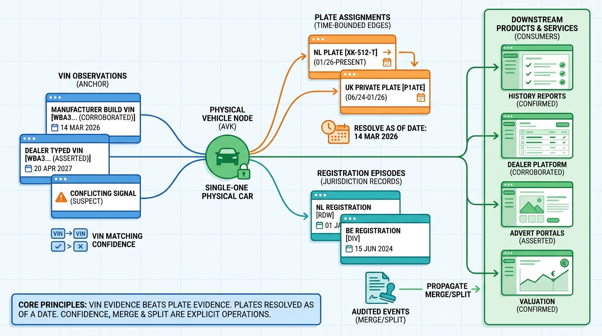

Part II — VEHICLE: Identity, Specification and History
Which Car Is This? VINs, Plates and the Vehicle Identity Graph

Image generated by Google Gemini (gemini-3-pro-image-preview)
Part II — VEHICLE: Identity, Specification and History

Image generated by Google Gemini (gemini-3-pro-image-preview)